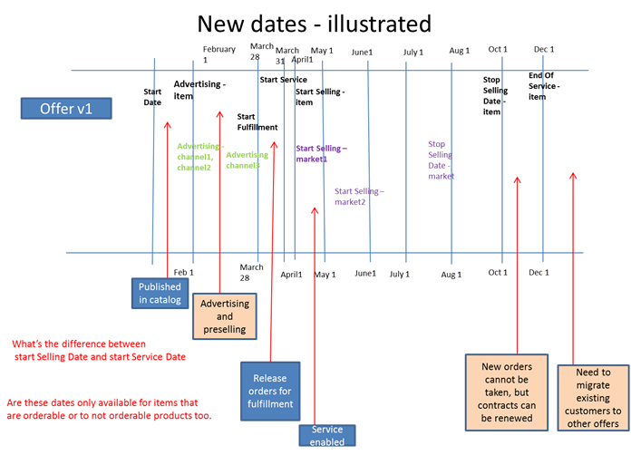

Support for Multiple Business Dates
Business dates allow you to handle a number of business scenarios that are not handled by the Start Date and End Date fields. In the past, with these two fields, only two dates could be applied to an item or an association. As a result, you can handle multiple sets of dates with business dates.
The following scenario shows how multiple dates can be used. A product manager defines an offer in the catalog with the following details:
| Field |
Description |
How Date Affects APIs |
Default Value after Creating First Version of Availability Dates Association |
Start Date
|
This field denotes a date controlling when to publish the item in the catalog. The item is not visible by anyone before this date. |
This date continues to drive versioning for catalog objects.
The enquiry API for an offer before this date return the latest version for the offer. |
Not available. |
Advertising Start Date |
This field references a date controlling the earliest date that an item may be advertised. |
This date drives the offer availability for browsing only. |
This field defaults to the start date. You can also set this field to null, meaning that the offer cannot be sold, advertised, fulfilled, or serviced. |
Start Selling Date |
This field indicates a date controlling the earliest date that an item may be sold. The item is cannot be ordered before this date. However, orders may be taken. |
This date drives whether the offer can be added to the basket.
An offer cannot add to the basket before this date. |
This field defaults to the start date. You can also set this field to null, meaning that the offer cannot be sold, advertised, fulfilled, or serviced. |
Start Fulfillment Date |
This field indicates a date controlling the earliest order fulfillment date for an item. This field denotes the earliest date for which orders may be released into fulfillment. |
This date is not used by the Catalog runtime logic.
However, the Catalog application provides a way for the other systems to access this date. |
This field defaults to the start date. You can also set this field to null, meaning that the offer cannot be sold, advertised, fulfilled, or serviced. |
Start Servicing Date |
This field denotes a date controlling the earliest requested due date for an item. The earliest indicates the due or installation date for orders. |
This date is not used by the Catalog runtime logic.
However, the Catalog application provides a way for the other systems to access this date. |
This field defaults to the start date. You can also set this field to null, meaning that the offer cannot be sold, advertised, fulfilled, or serviced. |
Stop Selling Date |
This field contains a date controlling when an item is pulled from active sale. This field represents the last date for which orders are taken. |
This date also drives offer availability or browsing.
After this date, the offer is not available for browsing, which means that new orders cannot be taken. However, the offer is valid for existing customers.
New orders cannot be taken for (new) customers. However, for an existing customer with a contract, it may be possible to renew the contract for another 12 months.
|
Not available. |
| Stop Servicing Date |
This field denotes a date controlling when an item is pulled from active service. This field contains the last date for which service is provided using the item. |
This date controls when an item is pulled from service.
This date denotes the last date for which service is provided using the item.
The enquiry API gives a warning message, as this service is in the end-of-service period. If an offer to migrate is defined in the catalog for this offer, the API provides the item code of that offer.
|
This field defaults to the end date. |
Notes:
- For the End Date field, after this date, the offer is no longer available in the catalog. Instead, the enquiry API provides the last offer version available, with a warning message.
- The Stop Selling Date field defaults to the end date.
- See the Associate a Business Date page for information on associating business dates to an item.
Offer Life Cycle and Dates
The following timeline describes the scenario in which new offers need to be advertised and pre-sold before they can be offered.

The approach is as follows:
- The new offer is available in the catalog before February 1st, but it can neither be ordered, nor advertised.
- The runQuery() Catalog API returns offers with the advertising data < today and the stop selling date > today.
For validating dates on input, the following validations apply:
- None of the dates are to the start date.
- None of the dates are past the end date:
- Advertising Start Date < = Start Selling Date
- Start Selling Date < Stop Selling Date
- Stop Selling Date < End of Service Date
- Start Fulfillment Date < Start Servicing Date < Start Selling Date < Stop Servicing Date < End Date
Availability date change means that a product offering needs to have the following information defined for its modelling to be complete:
- Availability
- Product specification
- Pricing
- Billing information
- Provisioning
- and so on
However, this complete modelling may take some time to get defined, developed, tested, approved, and published. The business may want to start advertising it or, in some case,s pre-ordering it while the offer is still being changed and configured
Specify Availability at the Market or Channel Level
All these scenarios presented previously indicate that these dates must be captured on the item itself. More granular dates are required that vary by channel and by market. |